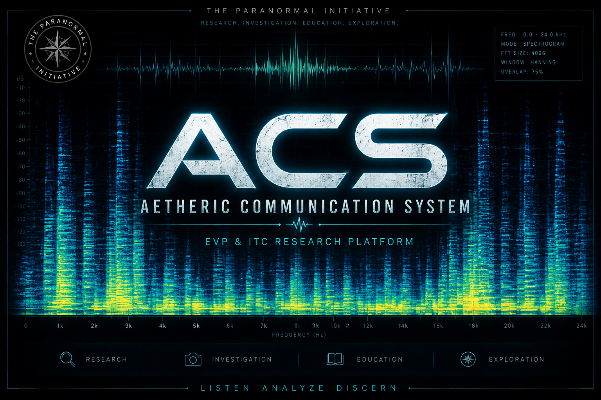

Current Version
Public release pending. Version information and downloads will appear here when the beta build is posted.
EVP / ITC Research
ACS is a free experimental audio research platform for EVP and ITC study. It is designed around phonemes and allophones rather than fixed word banks or canned phrase databases, giving researchers a more structured environment for audio experimentation and review.

Public release pending. Version information and downloads will appear here when the beta build is posted.
Mac updates are planned through Sparkle. Windows updates are planned through WinSparkle or an equivalent Windows update path.
ACS is an experimental tool. It does not guarantee communication, prove survival, or decide what a recording means.